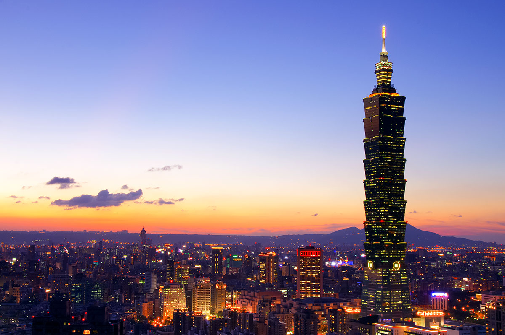
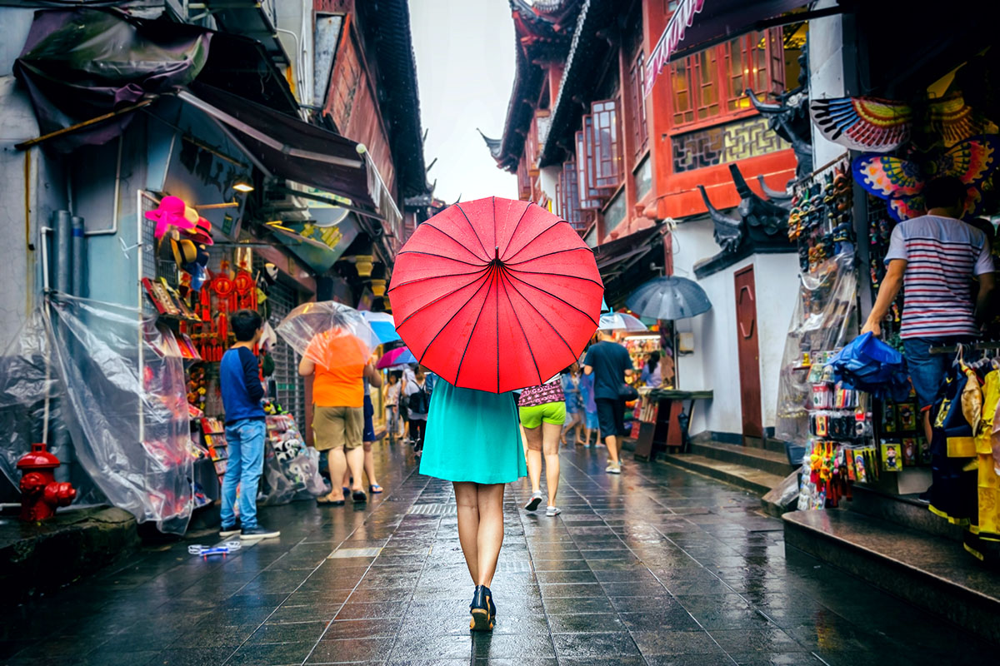
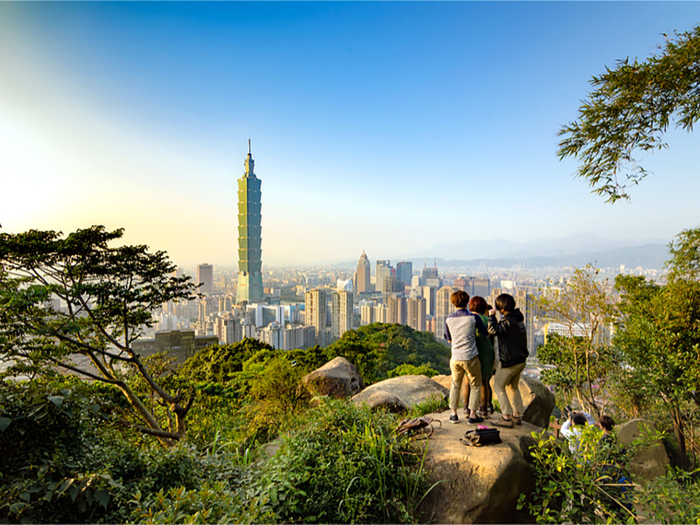
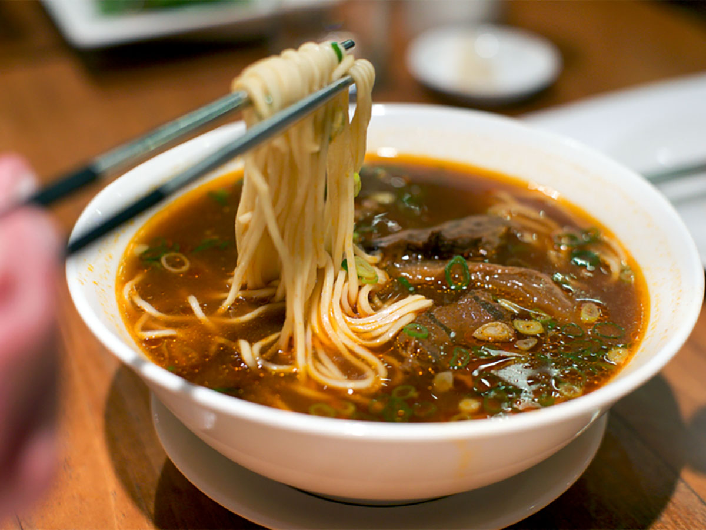
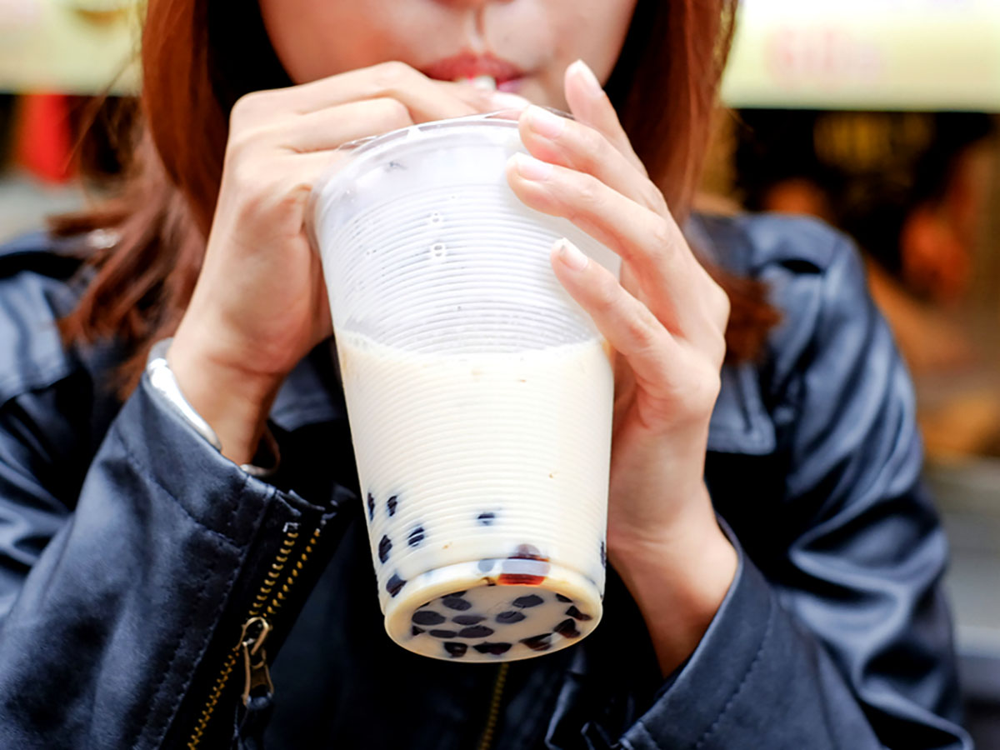
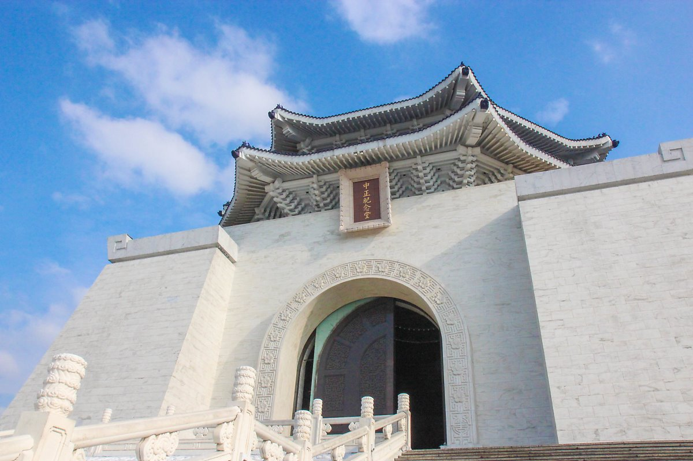
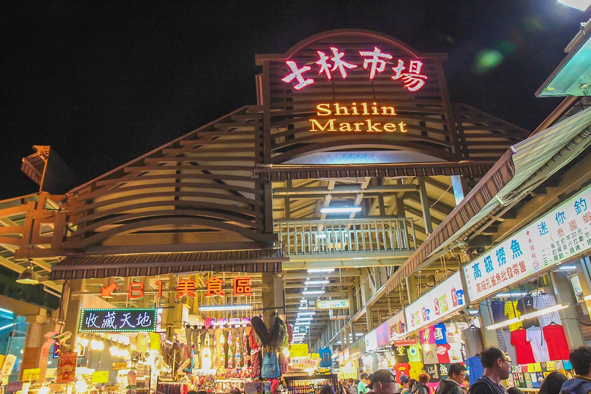
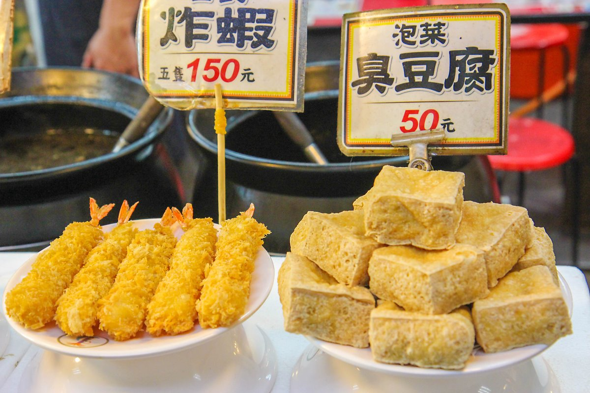
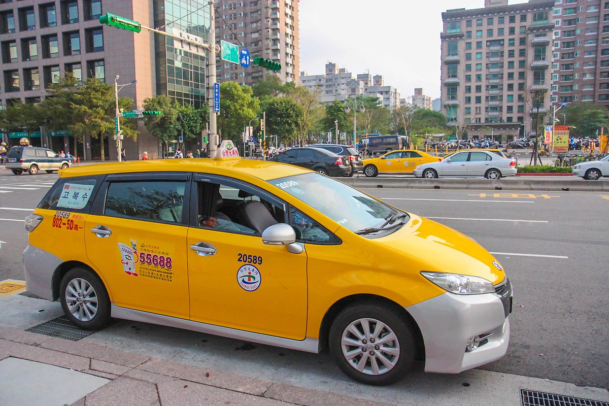

대만여행 : 타이베이 소개
대만여행, 가장 기본이 되는 수도 타이베이
타이베이의 다양함과 다채로운 음식의 향연, 훌륭한 자연환경은 많은 여행객의 마음을 사로잡아 타이베이를 아시아에서 가장 인기 있는 여행지 중 하나로 만들어준다.
타이베이에서 휴가를 보낸다면 새로운 로맨스를 일으킬 수도 있는 놓치지 말아야 할 여행지를 시작으로 타이베이와 사랑에 빠질 나만의 수천 가지 이유를 찾아보자.
1. 37초 안에 타이베이 101의 89개 층 올라가기

타이베이 101은 세계에서 가장 높은 친환경 초고층 빌딩으로 역사적이면서도 현대적인 타이베이의 모습을 보여준다.
세계에서 8번째로 높은 빌딩인 타이베이 101은 중국 민간 신앙에 따라 하늘로 뻗어 성장하는 대나무 형태로 설계되었다.
89층까지 단숨에 올라갈 수 있는 엘리베이터에 탑승하면 단 40초 안에 도시의 탁 트인 전경을 볼 수 있다.
2. 신이(信義)에서 마음껏 쇼핑하고 타이베이의 가장 핫!한 나이트라이프 즐기기

신이는 동쪽의 현대적인 쇼핑몰과 넓은 도로가 있는 타이베이의 쇼핑 구역과 서쪽의 숙련된 장인들의 상점과 야시장 등 두 개의 지역으로 나뉘어진다.
신이에는 가장 유명한 쇼핑 구역이 있으며, 도시의 정부 구역 중심에서 타이베이 101 몰, 성품서점 스펙트럼 송얀 스토어(誠品生活松菸店, Eslite Spectrum Songyan Store),
벨라비타 쇼핑몰 등을 찾아볼 수 있다. 전자기기에 관심이 있다면, 광화 디지털 플라자(光華商場, Guanghua Digital Plaza)를 방문해 다양한 전자기기를 둘러보자!
신이 지역은 또한 타이베이의 나이트라이프가 시작되는 곳으로 타이베이 101 아래서 파티를 즐기거나 잘 알려지지 않은 클럽을 방문해 타이베이의 문화적 장소와 현지 예술 구역을 발견할 수 있다.
3. 샹산(象山)에서 사수산(四獸山)을 트레킹하며 황홀한 도시 전경 즐기기

타이베이는 콘크리트 건물만 잔뜩있는 도시 정글이 아닌 대도시 한복판에 우거진 나무와 산이 있는 도시이다.
코끼리(샹산, 象山), 호랑이(후산, 虎山), 표범(바오산, 豹山), 사자(시산, 獅山) 등 4개의 동물을 본따 이름을 붙인 산들로 이뤄진 ‘사수산‘으로 하이킹 을 떠나보자.
타이베이 101 옆에 있는 이 곳은 일출과 마법과도 같은 타이베이의 스카이라인을 감상하기에 더 나위없이 좋은 위치에 있다.
고요함을 느끼고 싶다면 다안 삼림공원(大安森林公園)을 방문하고, 무지개 끝에 무엇이 있는지 늘 궁금했다면 스펀 폭포(十分瀑布)로 떠나보자.
4. 더 이상 말이 필요없는 소고기 국수, 우육면(牛肉面)

대만의 우육면은 평범한 국수가 아니라 적당히 익은 면과 부드러운 쇠고기, 진한 국물이 완벽하게 어우러지는 조합이다.
우육면은 대만에서 매년 타이베이 우육면 축제를 통해 기념할 정도로 상징적인 음식이니 즐겨보자!
5. 대만의 가장 달콤한 유혹, 버블티에 빠져보기

대만에서 버블티는 트렌드가 아닌 생활의 일부이다. 타이중(臺中)에서 시작된 버블티는 향기로운 홍차와 우유,
쫀득한 타피오카 버블이 어우러져 아시아를 넘어 다른 나라 사람들의 마음까지 사로잡았다.
대만에서 몇몇 유명한 버블티를 마셔보려면 춘수당(春水堂)의 지점 중 하나를 찾아 방문해 보자.
6. 타이베이 중심부 둘러보는 코스

타이베이에 도착했다면, 우선 도심에 집중해보자. ‘대만의 아버지’ 로 불리는 장개석 총통의 동상과 기념관이 있는 <중정기념당> 을 관람하는 것도 좋은 볼거리이다.
근처에 위치한 <융캉제>로 이동해서, 카페 거리를 걸어보자. 융캉제에는 맛집도 많은데, 딘타이펑 1호점을 비롯해 대만인들의 간편 조식으로 알려져 있는 총좌빙 호떡 맛집도 있다.
현지인도 줄을 서서 먹을 정도로 인기이다. 그리고 진하게 끓여낸 고기육수에 탱탱한 면발, 부드러운 고기 고명이 특징인 우육면 맛집도 있다.
7. 타이베이 스린야시장


어둠이 내리면 <스린야시장>으로 이동해 쇼핑을 즐겨보자.
타이베이 최대 규모의 야시장으로 불리는 곳인만큼 대만 자유여행 객들이 즐겨 찾는 곳이다.
닭고기로 만든 지파이, 큐브스테이크 등 여행자들의 입을 즐겁게 하는 음식들도 다양하다.
Tip 타이베이 추천 근교여행
예류 지질 공원 – 스펀 – 진과스 – 지우펀

*대만 택시투어?
대만자유여행자들이 많이 선택하는 당일치기 투어프로그램. 여행자들이 선호하는 예류지질공원, 스펀, 진과스, 지우펀 등을 편하게 둘러볼 수 있는 프로그램이다.
일명 ‘예스진지 투어’라고도 부른다. 최대 4명이 신청할 수 있으며, 인원이 늘어날 수록 개인 지불 비용은 저렴해지기 때문에, 혼자여행하는 혼여족들은 투어 동행을 구해 함께 다니는 것이 경제적이다.
보통은 8시간 기준이며, 위 명소 이외에 징통, 핑시, 허우통 고양이 마을 등을 추가하거나 제외할 수도 있다.